<ui-reveal> is a CSS-only reveal card built on native <details> and <summary>.
The front face lives in <summary>, revealed content in ::details-content.
to="viewport"Tap a game to expand the card from its tile into a full-screen page, with a bouncy morph where supported. Tap the icon to close.
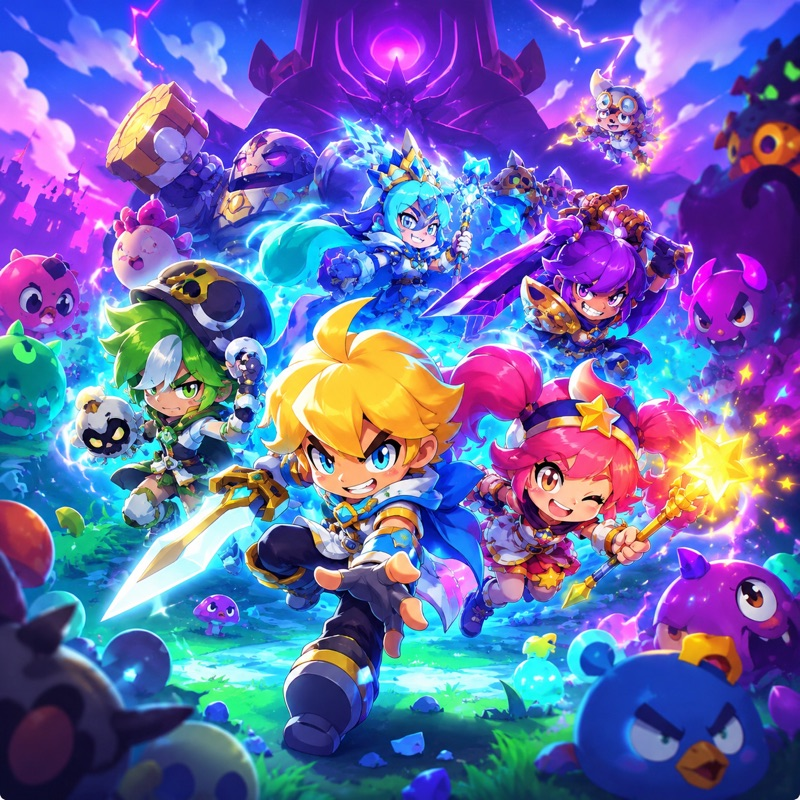
Gather your party and chase the falling stars. A hand-drawn action-RPG set across the floating isles of Auralis, where every comet leaves behind a creature to befriend — or battle.
Master the Starbind combat system, evolve your companions through dozens of forms, and uncover who shattered the night sky. Couch co-op for up to four heroes.
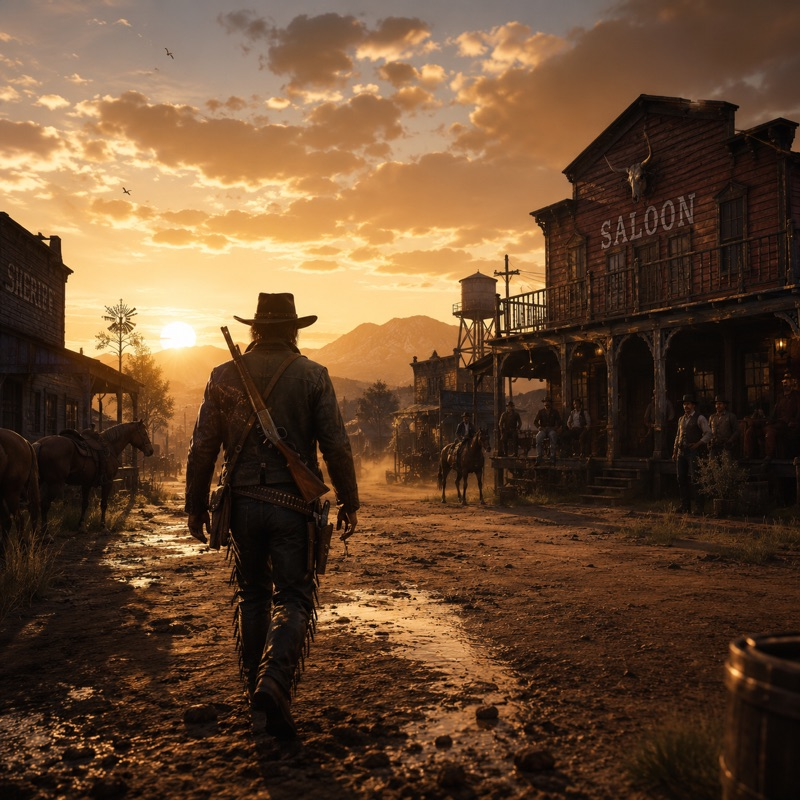
Ride into a frontier that remembers everything you do. Rob the noon stage or marshal the town that hangs you for it — every choice ripples through a living West of dust, debt and gunsmoke.
Tame wild horses, build your gang, and survive a dynamic bounty system where your reputation precedes you into every saloon. Online posses or solo drifter.
From a single cohort to the eternal city. Command Rome's legions across a campaign that spans the Republic to the Empire — march, besiege and intrigue your way to a throne history won't forget.
Real-time battles of thousands, a Senate that schemes behind your back, and city-building that turns marble quarries into wonders. Cross-play campaigns for up to eight consuls.
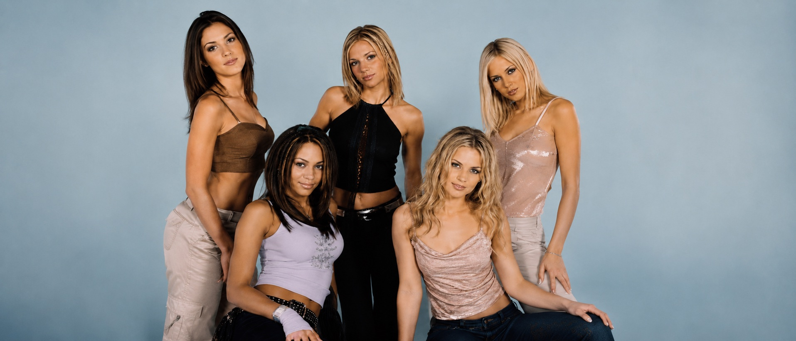
Nine bands, one late-night frequency. From darkwave basements to glitter-soaked arenas, this is the music our editors had on repeat all month — and the people making it.
We sent writers to the warehouses, the back-room pubs and the bedroom studios where these records were cut, and came back with a portrait of a scene that refuses to sit still. No two of these acts sound alike, yet they share a stubborn refusal to wait for permission.
Tap any card to meet the band behind the cover. Then make up your own mind about who owns the small hours.
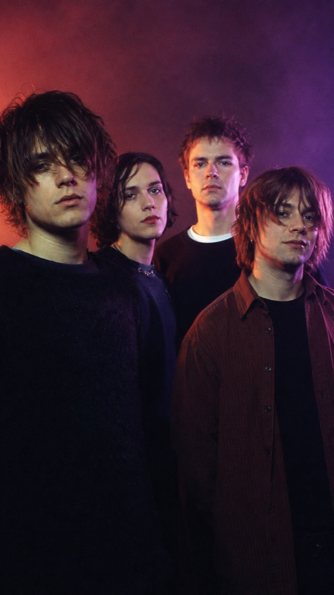
Square media, no content-area in the summary.
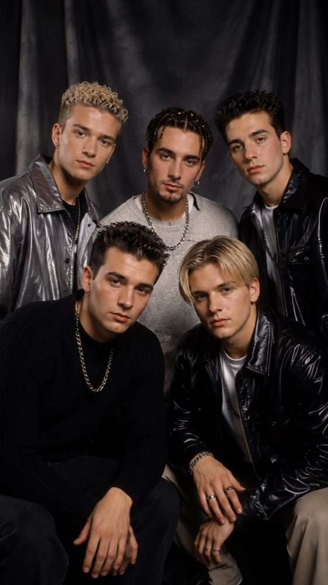
Portrait media.
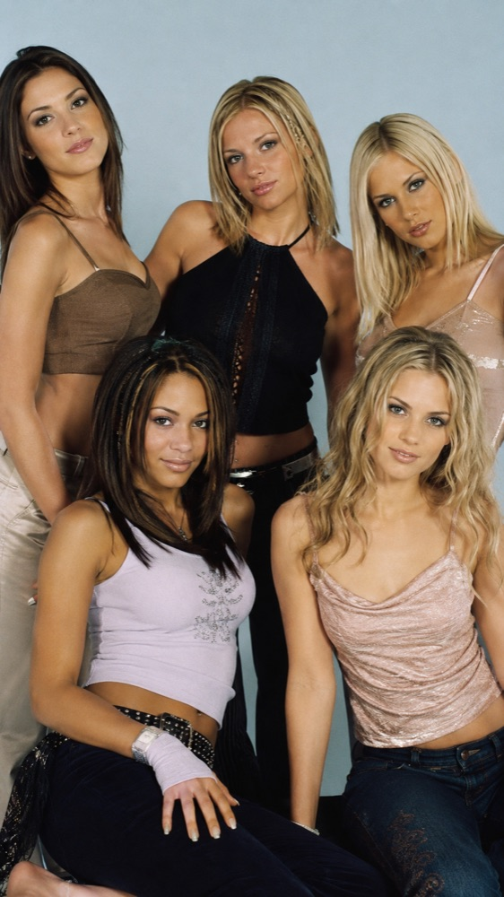
Widescreen media.
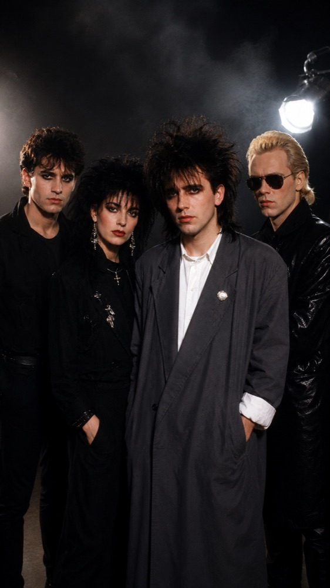
Darkwave from the old quarter. The Lure formed in the long shadow of post-punk, trading jangle for reverb and dread, their early demos circulating on hand-dubbed cassettes passed between basement shows.
By the second record the sound had thickened — drum machines under live toms, a baritone guitar tuned down until the strings flapped, vocals buried like a confession you weren't meant to hear.
They almost split after the tour: three of them stopped speaking, the singer moved abroad, and for two years the band existed only as a rumour and a few warped bootlegs. Then a remastered single found a second life online, and a generation that had never seen them live decided The Lure belonged to them.
The reunion record, when it finally came, sounded nothing like nostalgia. It was colder, slower, and somehow more alive — proof that the old quarter still had one more song left in it.
Reverb-soaked guitars and bittersweet hooks. Built a following on hand-dubbed cassettes passed between basement shows, and turned down every label that came calling.
Their debut arrived without warning, mastered in a friend's bedroom and pressed in a run of three hundred — every copy sold before the second week was out. By the time the reissue landed, the original was changing hands for the price of a month's rent.
The songs work like that too: small at first, then suddenly enormous. A verse mumbled into a four-track becomes, by the final chorus, the loudest thing in the room. The band swear they don't plan it; it just happens whenever they stop trying to sound clever.
They still refuse the big rooms, still book the venues with bad sightlines and worse PAs, still treat every show like the first one. Ask them why and they shrug — the cassettes worked, so why change now.
Five voices, one harmony. Assembled for the arenas but secretly writing their own songs, they broke from their handlers to chase a sound that was finally theirs.
The split cost them a label and half their fanbase, but the songs that followed were the first anyone could honestly call their own. They financed the record themselves, rehearsing in a rented unit above a tyre shop and tracking vocals after midnight when the rates dropped.
What surprised everyone — including them — was how good it was. The harmonies they'd been drilled on for years suddenly had something to say, and the songs landed with a warmth no focus group had ever managed to manufacture.
They're smaller now, playing theatres instead of arenas, and they'll tell you they've never been happier. The screaming is quieter; the listening is louder.
Synth-pop with a midnight sheen. Traded bedroom demos for stadium choruses — all glitter and heartbreak under sodium streetlights.
Every track sounds like the last song at a club you never wanted to leave, the kind that follows you home and won't let go till morning. They built it all on a single second-hand synth and a drum machine held together with tape.
The breakthrough came sideways: a track buried on the B-side of a forgotten single soundtracked a film's closing credits, and within a month the band were playing to crowds who knew every word to a song they'd nearly thrown away.
They've leaned into the lights ever since — bigger rooms, brighter neon, the same broken heart at the centre of it all. Underneath the gloss, they insist, it's still just two kids and a borrowed keyboard.
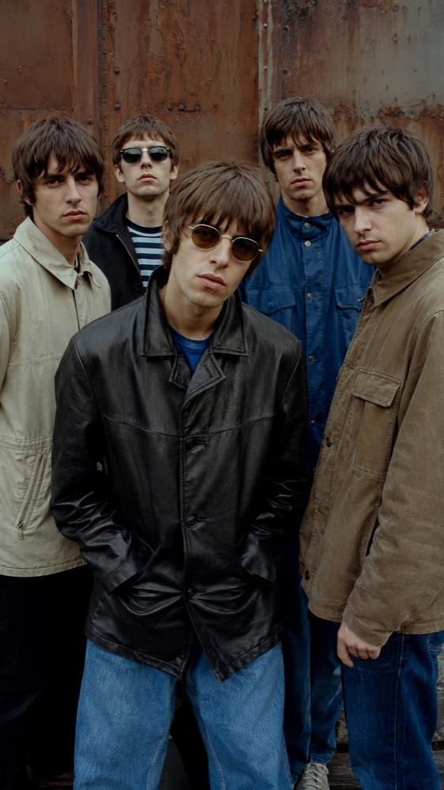
Swaggering guitars and singalong choruses. Kings of the back-room pub circuit, they soundtracked a summer of cheap lager and outsized dreams.
The press anointed them the next big thing before the ink dried on their first single, and for one long hot July they almost believed it. The covers, the radio sessions, the rivalries invented by bored journalists — they rode all of it with a grin.
Then the summer ended, as summers do. The second single stalled, the hype machine moved on, and the band were left holding a sound that had briefly defined a city and now belonged to no one in particular.
They never quite went away. Every few years they regroup, play the old songs to people who've grown up alongside them, and remind everyone that for one perfect July, Camden Court really were the best band in the country.
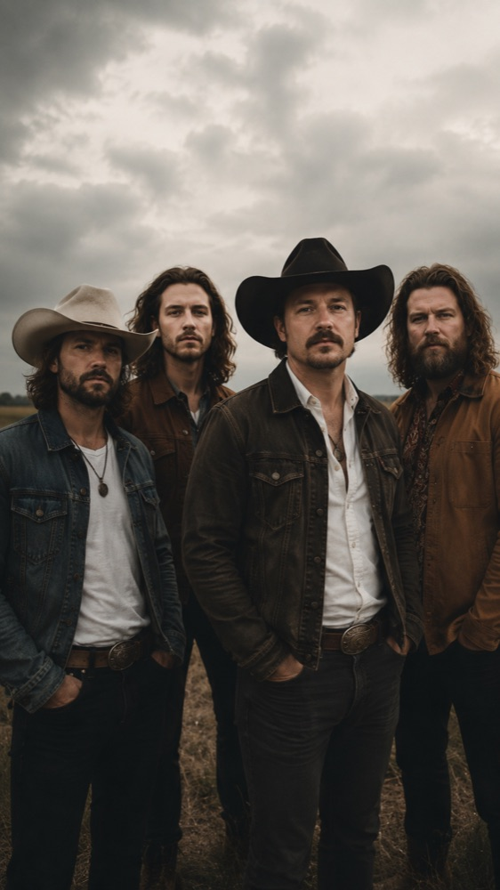
Steel strings and long highways. Recorded live in a barn with the doors thrown open, singing about towns that never quite let you leave.
No click track, no second takes — just four players in a circle and whatever the night gave them before the coffee ran out. You can hear the room on every track: the creak of the boards, a dog barking somewhere past the third verse.
They tour in a single van, play county fairs and roadhouse bars, and treat a half-empty room the same as a sold-out one. The songs are about staying when leaving would be easier, and they mean every word.
A bigger label came sniffing once, talked about studios and string sections. The band thanked them, drove home, and cut the next record in the same barn with the same broken microphone. Some things, they reckon, you don't fix.
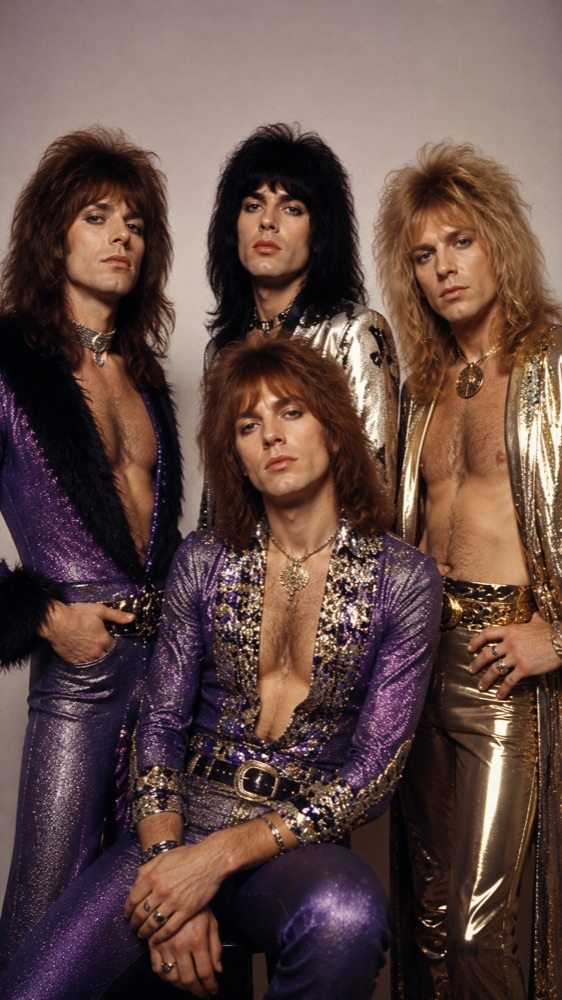
Platform boots and pyrotechnics. Every gig became a coronation — feathers, fireworks, and a guitar solo that refused to end.
Behind the spectacle sat real songs, sharp enough that even the cynics in the back row were singing along by the encore. The costumes cost more than the recording budget, and the band considered that money well spent.
They understood something their rivals never did: that a show is a promise, and a crowd that's travelled across the country deserves to leave dazzled. So they gave them everything — the smoke, the capes, the impossible high note held a beat too long.
The look dated, of course; the songs didn't. Strip away the glitter and what's left is a run of singles built like cathedrals, still loud enough to fill a room thirty years on.
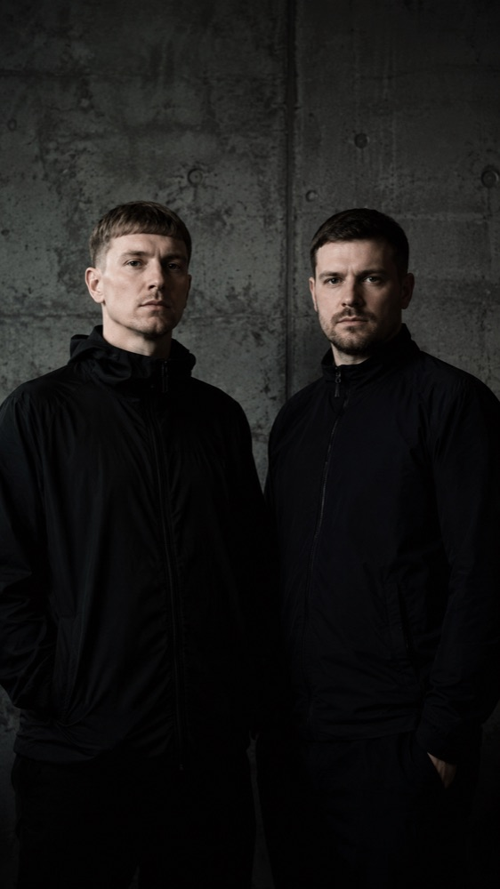
Concrete basements and four-to-the-floor. A reputation built on warehouse sets that ran till sunrise, the machines doing all the talking.
They never released a face, never an interview — just white-label twelve-inches that turned up in the right bags at the right hour. For years nobody knew if Pulse Theory was one person or a collective, and the mystery only made the records travel further.
The sets were less performances than endurance rituals: six, seven hours of tracks that breathed and built and never quite resolved, a crowd held in suspension until the first grey light leaked through the loading-bay doors.
Promoters begged them to tour, to play the festivals, to step into the light. They declined every time. The work was the warehouse, the dark, the hours nobody else wanted — and they had no intention of taking it anywhere a clock could find them.
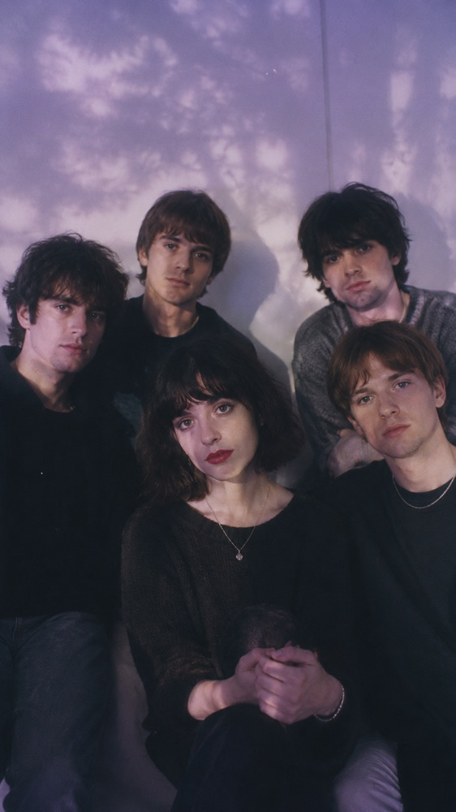
Guitars drowned in reverb and a voice half-dissolved in the mix. Halcyon Wash make songs that feel remembered rather than heard — bright, blurred, and always slipping just out of reach.
They record at dusk with the tape hiss left in, chasing the exact moment a melody starts to fade. Live, the stage vanishes behind haze and slow light, the band more felt than seen.
It's deliberate, all of it. The singer mixes her own vocals down until the words blur, because the feeling, she says, was always more honest than the sentence. Fans trade lyric sheets like rumours, half-sure they've invented the lines themselves.
Their records don't so much end as evaporate, each one a little further from solid ground than the last. Critics call it escapism; the band call it the truth, just softened enough to live with.
Three from the lineup, up close — tap anywhere, front or back, to turn the card over. Links on the back still work.
Darkwave from the old quarter — reverb, dread, and a baritone tuned until the strings flap.
All glitter and heartbreak under sodium streetlights.
Five voices, one harmony — the boy band that broke free to write its own songs.
The same lineup, framed four ways — image above, below, left or right of the words.
Reverb-soaked guitars and bittersweet hooks, built on hand-dubbed cassettes.
Arena-sized harmonies, written in a unit above a tyre shop.
Bedroom demos turned stadium choruses, one second-hand synth at a time.
Cold, slow darkwave conjured in a basement full of smoke.